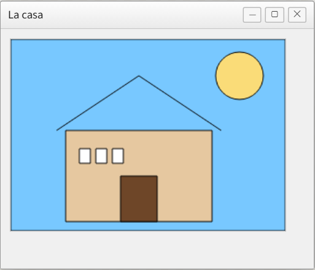
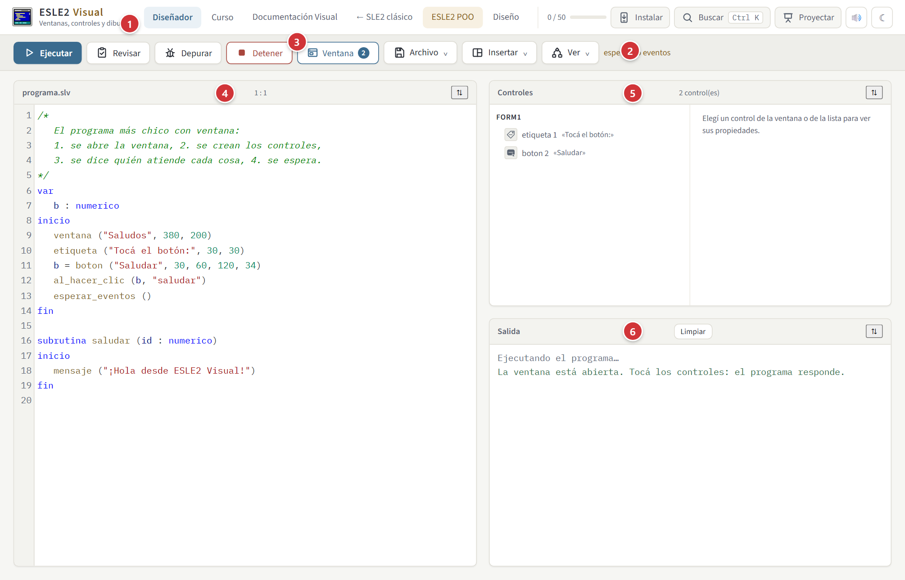
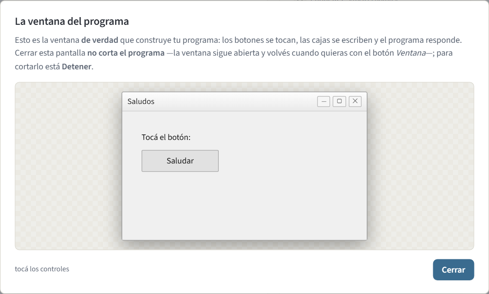
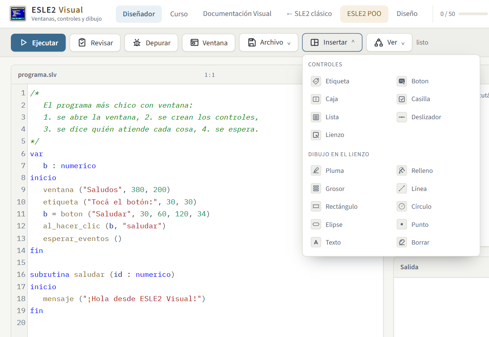
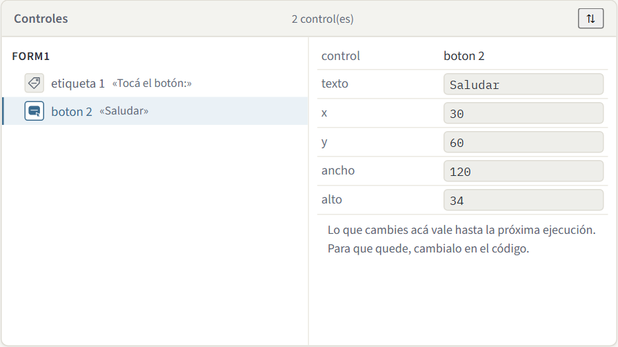
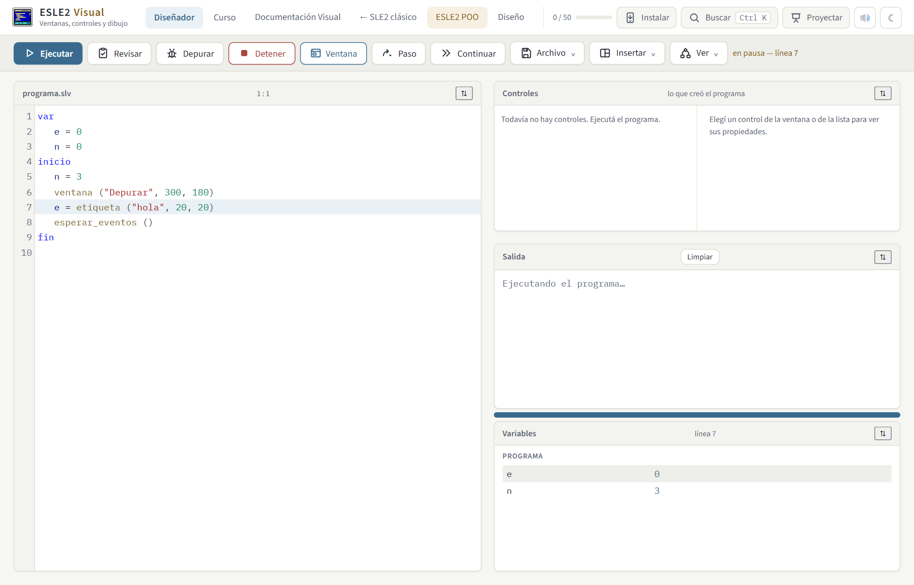
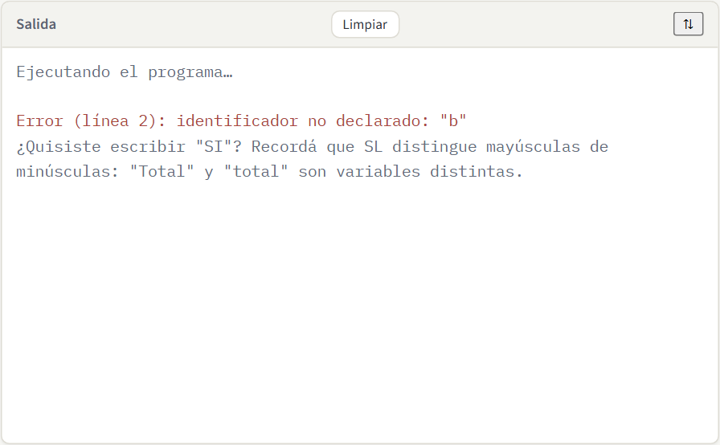
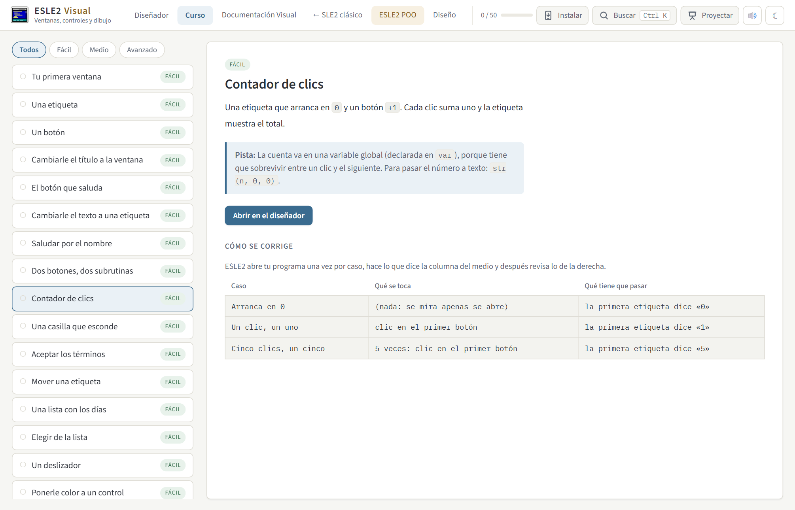
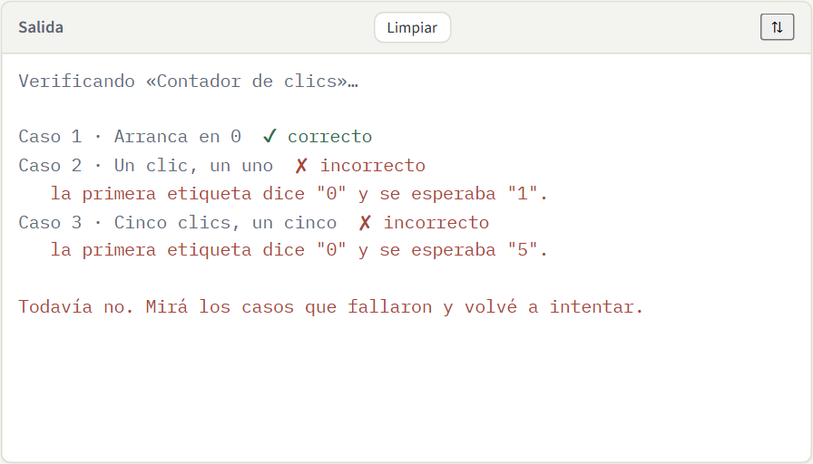
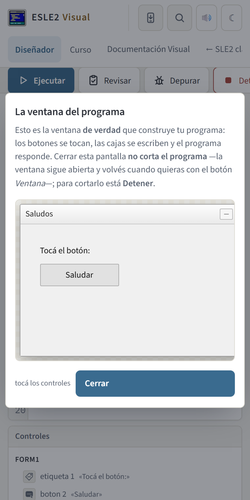

Documentación de ESLE2 Visual
Cómo hacer una ventana con botones, cajas de texto, listas y dibujos usando el mismo lenguaje SLE2 del curso. Escribí en el buscador del índice para filtrar: se ocultan los apartados que no tengan que ver con lo que buscás.
El entorno está en ESLE2 Visual. Los programas se
guardan con extensión .slv. Si es la primera vez, empezá por
El entorno, zona por zona: está toda la pantalla explicada con
capturas.
Qué es ESLE2 Visual
El lenguaje de siempre, con una biblioteca para la pantalla.
No es otro lenguaje
ESLE2 Visual no agrega ni una palabra reservada. No hay sentencias
nuevas, ni tipos nuevos, ni una sintaxis nueva que aprender: todo lo visual son
subrutinas predefinidas, igual que imprimir() o
substr().
Eso quiere decir que lo que ya sabés sigue valiendo tal cual: si,
mientras, desde, los vectores, los registros y tus propias
subrutinas funcionan exactamente igual. Lo único que cambia es que ahora hay unas
subrutinas más, y que en vez de escribir en la pantalla de texto, dibujan una ventana.
Qué se puede hacer
- Ventanas con etiquetas, botones, cajas de texto, casillas, listas y deslizadores.
- Responder a lo que hace la persona: un clic, un cambio, una tecla.
- Dibujar en un lienzo: líneas, rectángulos, círculos, elipses, puntos y texto, con color y grosor.
imprimir(),
leer(), colores y cursor— eso está en el
IDE clásico y su documentación.
Las dos cosas usan el mismo lenguaje.La forma de un programa visual
Siempre los mismos cuatro pasos.
Los cuatro pasos
var
b : numerico
inicio
ventana ("Saludos", 380, 200) // 1. abrir la ventana
b = boton ("Saludar", 30, 60, 120, 34) // 2. crear los controles
al_hacer_clic (b, "saludar") // 3. quién atiende cada cosa
esperar_eventos () // 4. quedarse esperando
fin
subrutina saludar (id : numerico)
inicio
mensaje ("¡Hola!")
fin- La ventana se abre una sola vez, al principio.
- Los controles se crean con una subrutina que devuelve un número: ese número es el control, y hay que guardarlo en una variable para poder usarlo después.
- Los eventos se conectan a una subrutina tuya, por su nombre y entre comillas.
esperar_eventos()deja el programa esperando.
Por qué hace falta esperar_eventos()
Un programa de consola empieza, hace lo suyo y termina. Uno con ventana no puede terminar: si terminara, la ventana se cerraría al instante y nadie llegaría a tocar nada. Por eso el programa se queda esperando, y cada vez que pasa algo el entorno llama a la subrutina que registraste, la ejecuta entera y vuelve a esperar.
Es exactamente lo que hace un entorno de escritorio cuando escribís
Application.Run(...), con un nombre que se puede leer.
esperar_eventos(), la ventana
aparece y desaparece: el programa llegó al fin y terminó. Es el error más
común al empezar.El número del control
Cada control que se crea devuelve un número, que se van dando en orden: el primero es el 1, el segundo el 2, y así. Guardalo siempre en una variable con un nombre que se entienda; usar el número a mano funciona, pero se rompe apenas agregás un control antes.
var
nombre, aceptar : numerico
inicio
ventana ("Datos", 400, 200)
nombre = caja (20, 20, 200, 26) // nombre vale 1
aceptar = boton ("Listo", 20, 60) // aceptar vale 2
...Entregar la guía. Abajo del mensaje del profesor hay un botón: el alumno pone
su nombre, el navegador corrige ahí mismo cada ejercicio de la guía y baja un archivo. El
profesor junta todos los archivos en Ver entregas… y sale la planilla del curso, con un
.csv para abrir con una planilla de cálculo. Como una guía es tarea y no un
parcial, no hay cronómetro.
Modo examen
Un examen es un archivo. El profesor elige los ejercicios y cuánto dura —hay plantillas armadas: ventana y controles, eventos y datos, práctica rápida— y baja un archivo. El alumno lo abre desde Modo examen…, y el IDE se pone en modo examen: cronómetro arriba, sin la lista del curso y sin las soluciones.
Al entregar —o cuando se acaba el tiempo— el navegador corrige solo cada ejercicio con la misma verificación del botón Verificar, y baja una entrega con los resultados, el código escrito y los tiempos. El profesor la abre acá mismo y ve la planilla del curso.
No hay servidor: todo viaja en archivos. El examen no vigila a nadie —eso no se puede hacer honestamente sin uno—, pero deja constancia de qué se entregó y cuándo.
Modo aula: repartir una guía
En la vista Curso, el botón Modo aula… arma una guía: se marcan los ejercicios que entran, se le pone un título y un mensaje para la clase, y sale un enlace. Quien lo abre ve esa guía y nada más —la lista son esos ejercicios y arriba está el mensaje del profesor—, y cada uno se verifica solo, igual que siempre. Salir de la guía devuelve el curso completo.
La guía entera viaja adentro del enlace, después del #: no hay
servidor, no hay cuentas, y no se guarda en ninguna parte. Un enlace se reparte por WhatsApp o
se pega en el pizarrón, y sirve el día del parcial aunque se caiga todo lo demás.
Es el mismo modo aula del IDE de ESLE2. Los ejercicios de Visual se verifican por lo que el
programa dibuja en la ventana, así que una guía de acá solo se abre en
visual.html.
Diseñar la ventana arrastrando
El botón Diseñar de la barra de herramientas (Ctrl + Shift + D) abre tu ventana a tamaño real y te deja acomodar los controles con el mouse, en vez de ir probando números hasta que queden derechos.
Lo que arrastrás cambia tu propio programa. No hay un archivo de diseño aparte: mover un botón cambia los dos números de su línea, y nada más de esa línea. Tus comentarios y tu sangría quedan como estaban, y con Ctrl + Z deshacés el arrastre entero de una.
Hay controles que se ven pero no se mueven, y están rayados: son los que tienen una variable
o una cuenta en lugar de un número, como
boton ("Ok", x, y + 10, 100, 30). Moverlos querría decir cambiar esa variable,
que puede estar usada en otras diez líneas, así que el diseñador no la toca y te lo explica.
Lo mismo con los controles que se crean adentro de un ciclo o de una subrutina: no tienen un
lugar fijo hasta que el programa pasa por ahí.
Cuando agregás un control desde el cuadro de la izquierda, se escribe su línea antes de
esperar_eventos () y se le declara una variable, para que puedas atenderle el
clic con al_hacer_clic (). Y si borrás uno, se van también las líneas que le
registraban eventos: si quedaran, el programa reventaría apuntando a un control que ya no
existe.
Se usa sin mouse. Con Tab recorrés los controles —cada uno dice qué es, qué dice y dónde está—, las flechas lo mueven de a un píxel, con Shift de a diez, Alt + flechas lo estiran y Supr lo borra. También podés escribir los números a mano en el panel de la derecha.
La ventana
Dónde viven los controles.
| Subrutina | Qué hace |
|---|---|
ventana (titulo, ancho, alto) |
Abre la ventana. El ancho y el alto son del área de adentro, en píxeles; si no se ponen, son 480 × 320. El mínimo es 120 × 90. |
esperar_eventos () |
Deja el programa esperando: de acá no sigue hasta que se cierre la ventana. Va siempre al final del programa principal. |
titulo_ventana (t) |
Cambia el título mientras el programa corre. |
cerrar_ventana () |
Cierra la ventana y termina el programa. |
mensaje (texto) |
Muestra un cartel con un texto y un botón para cerrarlo. |
Las posiciones de los controles se cuentan desde la esquina de arriba a la
izquierda del área de la ventana: x hacia la derecha,
y hacia abajo.
Los controles
Los diez que hay, y cómo se crean.
Crearlos
Todos devuelven el número del control. El ancho y el alto se pueden omitir: cada uno tiene el suyo de fábrica.
| Subrutina | Qué es |
|---|---|
etiqueta (texto, x, y [, ancho, alto]) | Un texto fijo. |
boton (texto, x, y [, ancho, alto]) | Un botón para tocar. |
caja (x, y [, ancho, alto]) | Una caja de texto, vacía al principio. |
casilla (texto, x, y [, ancho, alto]) | Una casilla que se marca y se desmarca. |
lista (x, y [, ancho, alto]) | Una lista de opciones. |
desplegable (x, y [, ancho, alto]) | Una lista que se abre al tocarla y muestra una opción por vez. Ocupa mucho menos que una lista. |
numero (x, y [, ancho, alto]) | Una caja que solo acepta números enteros, con flechitas para subir y bajar. |
progreso (x, y [, ancho, alto]) | Una barra que se llena de 0 a 100. Solo se mira: no se toca. |
deslizador (x, y [, ancho, alto]) | Una barra para elegir un número de 0 a 100. |
lienzo (x, y [, ancho, alto]) | Un rectángulo en blanco para dibujar. |
Leerlos y cambiarlos
| Subrutina | Qué hace |
|---|---|
poner_texto (c, texto) | Cambia el texto de una etiqueta, un botón o una caja. |
leer_texto (c) | Devuelve el texto que tiene (lo que escribió la persona, si es una caja). |
poner_valor (c, n) / leer_valor (c) |
El número de un deslizador o de un numero, cuánto se llenó un progreso, o cuál opción está elegida en un desplegable —contando desde 1, igual que los vectores de SL—. |
rango_numero (c, minimo, maximo [, paso]) | Hasta dónde llega un numero. El paso es de a cuánto sube con cada flechita; de fábrica va de 0 a 100 de a 1. |
cuantos_items (c) | Cuántas opciones tiene una lista o un desplegable. |
asociar_etiqueta (e, c) | Le dice al navegador que esa etiqueta es el nombre de ese control. Es lo que hace que un lector de pantalla diga «Materia» al llegar al desplegable en vez de «lista, sin nombre». |
enfocar (c) | Manda el cursor a ese control. Devuelve TRUE si se pudo: un control escondido o apagado no recibe el foco. |
marcar (c, TRUE) / marcado (c) | Marcar una casilla y preguntar si está marcada. |
agregar_item (c, texto) | Agrega una opción a una lista o a un desplegable. |
limpiar_items (c) | Vacía la lista o el desplegable. |
item_elegido (c) | El texto de la opción elegida. |
mover (c, x, y) | Lo cambia de lugar. |
redimensionar (c, ancho, alto) | Le cambia el tamaño. |
visible (c, TRUE/FALSE) | Lo muestra o lo esconde. |
habilitar (c, TRUE/FALSE) | Lo deja usable o apagado. |
color_fondo (c, r, g, b) · color_texto (c, r, g, b) |
Colores, de 0 a 255 cada uno. |
Los eventos
Qué hacer cuando la persona toca algo.
Conectar un control con una subrutina
| Subrutina | Cuándo se dispara |
|---|---|
al_hacer_clic (c, "sub") | Al tocar un botón, una casilla, una etiqueta o el lienzo. |
al_cambiar (c, "sub") | Al mover un deslizador, elegir en una lista o marcar una casilla. |
al_escribir (c, "sub") | Cada vez que se escribe una tecla en una caja de texto. |
La subrutina recibe el número del control que provocó el evento, así que una sola puede atender a varios:
al_hacer_clic (mas, "mover")
al_hacer_clic (menos, "mover")
...
subrutina mover (id : numerico)
inicio
si ( id == 1 )
{
cuenta = cuenta + 1
sino
cuenta = cuenta - 1
}
poner_texto (3, str (cuenta, 0, 0))
finSi tu subrutina no necesita el número, podés declararla sin parámetros y funciona igual.
al_hacer_clic (b, "saludar"), no al_hacer_clic (b, saludar).
Si el nombre no existe, ESLE2 te lo dice al ejecutar y te sugiere el parecido.Los eventos se atienden de a uno
Mientras corre una subrutina de evento, los demás clics esperan su turno. No hay dos partes del programa corriendo a la vez, así que no hace falta pensar en eso.
Si adentro de un evento hay un error —una división por cero, un control que no existe—, el error se muestra en la ventana de salida y el programa se cierra, igual que en el IDE clásico.
Preguntar y esperar
Confirmar antes de hacer algo que no se puede deshacer.
La pregunta
confirmar (pregunta) abre un cartel con Sí y No
y detiene el programa hasta que la persona conteste. Devuelve
TRUE o FALSE.
subrutina vaciar (id : numerico)
inicio
si (confirmar ("¿Vaciar la lista?"))
{
limpiar_items (li)
}
finEs la primera vez que escribís código que se frena esperando a una persona y después sigue. Mientras el cartel está abierto, la ventana no se puede tocar: es lo mismo que hace cualquier programa cuando te pregunta si querés guardar.
El cursor arranca en No, y Escape también contesta que no. No es casualidad: quien apura un Enter no tiene que borrar nada sin querer.
| Subrutina | Qué hace |
|---|---|
confirmar (pregunta) | Pregunta Sí o No y devuelve la respuesta. El programa espera. |
mensaje (texto) | Muestra un aviso. No pregunta nada y no espera. |
El temporizador
Que algo pase solo, cada tantos segundos.
Un reloj que llama a una subrutina
Hasta acá todo pasaba porque alguien tocaba algo. El temporizador es lo que falta para un contador, un juego o una barra que avanza sola.
t = temporizador (1000, "avanzar")
activar_temporizador (t, TRUE)Arranca apagado. Se crea primero y se prende cuando la ventana ya está armada: si empezara solo, el programa estaría haciendo cosas antes de terminar de dibujarse.
| Subrutina | Qué hace |
|---|---|
temporizador (milisegundos, "subrutina") | Crea el reloj y devuelve su número. Mínimo 50 milisegundos. Todavía no anda. |
activar_temporizador (t, TRUE/FALSE) | Lo prende o lo apaga. Apagarlo cancela también el tic que estuviera por venir. |
temporizador_andando (t) | Si está prendido. Sirve para un botón que hace Pausa y Seguir con el mismo código. |
Dos cosas que conviene saber
No es un cronómetro exacto. Un temporizador de 1000 milisegundos llama a tu subrutina más o menos cada segundo: si el navegador está ocupado, llega un poco tarde. Para medir tiempo de verdad no sirve; para que algo se mueva, sí.
Nunca se te van a amontonar los tics. El próximo se agenda recién cuando el anterior terminó. Si tu subrutina tarda más que el intervalo, el reloj se atrasa — que es molesto— pero no se guarda los que faltaron para correrlos todos juntos, que sería imposible de entender.
Cerrar la ventana no para el reloj. Cerrarla la esconde, como cuando minimizás un programa: el tuyo sigue corriendo y la volvés a abrir con el botón Ventana tal como estaba. Para cortar de verdad está Detener, que apaga todos los temporizadores.
Dibujar en el lienzo
Líneas, figuras y texto con coordenadas.
Las órdenes
Todas reciben primero el número del lienzo. Las coordenadas se cuentan desde la esquina de arriba a la izquierda del lienzo, no de la ventana.
| Subrutina | Qué dibuja |
|---|---|
pluma (l, r, g, b) | El color de las líneas y los bordes. |
relleno (l, r, g, b) | El color con que se rellenan las figuras. |
grosor (l, n) | El grosor de la línea, en píxeles. |
linea (l, x1, y1, x2, y2) | Una línea de un punto al otro. |
rectangulo (l, x, y, ancho, alto) | Un rectángulo. |
circulo (l, x, y, radio) | Un círculo con centro en (x, y). |
elipse (l, x, y, ancho, alto) | Una elipse con centro en (x, y). |
punto (l, x, y) | Un punto suelto. |
texto_en (l, x, y, texto) | Escribe un texto adentro del dibujo. |
borrar_lienzo (l) | Deja el lienzo en blanco. |
raton_x () · raton_y () | Dónde se tocó por última vez, dentro del control. |
Un dibujo es una lista de órdenes
No hay más secreto: se elige un color de relleno, se dibuja una figura, se elige otro,
se dibuja otra. El color queda puesto hasta que lo cambies, como si apoyaras y
levantaras el pincel. Esta casa son doce órdenes y un desde para las
ventanas.

Dibujar con ciclos
Acá se ve para qué sirve lo que ya sabías: un desde dibuja cincuenta
líneas sin escribirlas cincuenta veces.
var
l, i : numerico
inicio
ventana ("Abanico", 360, 300)
l = lienzo (10, 10, 320, 240)
pluma (l, 60, 110, 190)
desde i = 0 hasta 20
{
linea (l, 10, 230, 10 + i * 15, 10)
}
esperar_eventos ()
finDibujar cuando pasa algo
El lienzo también recibe clics: conectalo con al_hacer_clic y usá
raton_x() y raton_y() para saber dónde tocó la persona.
al_hacer_clic (l, "pintar")
...
subrutina pintar (id : numerico)
inicio
relleno (id, 220, 80, 60)
circulo (id, raton_x (), raton_y (), 10)
finEl entorno, zona por zona
Qué es cada cosa de la pantalla y para qué sirve.
ESLE2 Visual es el mismo IDE que ya conocés: la misma cabecera, la misma barra de herramientas, los mismos paneles que se arrastran y se agrandan, el mismo curso. Lo distinto son tres cosas: el botón Ventana, que abre la ventana que construye tu programa; el panel Controles; y el menú Insertar.

- Cabecera del sitio. La misma de todas las páginas. A la izquierda, las dos mitades de esta: Diseñador (acá se programa) y Curso (los 50 ejercicios), y los enlaces al resto del sitio. A la derecha, tu racha, el progreso del curso, el buscador global (Ctrl + K), el modo presentación, los sonidos y el tema claro u oscuro.
- Barra de herramientas. Ejecutar (Ctrl + Enter) arranca el programa —y si ya había una ventana abierta, la cierra y vuelve a arrancar—; Detener (Esc) la cierra; Revisar busca errores y malas costumbres sin ejecutar nada; Depurar (F9) lo corre paso a paso. Y tres menús: Archivo, Insertar y Ver —donde está Ajustar texto (Alt + Z), que corta las líneas largas al ancho del panel sin perder la sangría.
- Ventana (Ctrl + Shift + V). El botón que abre la ventana de tu programa. Se abre sola la primera vez que el programa dibuja algo, y de ahí en adelante mandás vos. La pastilla dice cuántos controles hay adentro, así que se sabe que la ventana tiene algo sin abrirla, y el botón se enciende mientras el programa está vivo.
- El programa. El editor de siempre: colores, paréntesis emparejados, autocompletado y el número de línea y columna del cursor arriba a la derecha. Ahora se lleva la pantalla entera, que es donde se pasa el tiempo.
- Controles. A la izquierda, todo lo que el programa creó, en orden, con el número que le tocó a cada uno y su icono; tocá uno para seleccionarlo. A la derecha, su texto, su posición y su tamaño, que se pueden tocar para probar cómo queda: eso vale hasta la próxima ejecución. Para que quede, cambialo en el código.
- Salida. Lo que imprime el programa, los avisos, los errores y el resultado de verificar un ejercicio.
La ventana del programa
El botón Ventana abre esto: la ventana de verdad que construye tu programa, sobre el fondo a cuadros que se lee como superficie de diseño. Los botones se tocan, las cajas se escriben, las listas se eligen y el programa responde, igual que una aplicación de escritorio.

ventana ("Saludos", 380, 200): el ancho y el alto
son los del área gris de adentro, sin contar la barra de título.Cerrar esta pantalla no corta el programa. La ventana sigue abierta
—el estado dice esperando eventos, que es exactamente lo que hace
esperar_eventos()— y volvés cuando quieras con el mismo botón. Para cortar
el programa está Detener, o la ✕ de la barra de título
de la ventana.
La ventana no se achica aunque la pantalla sea chica: mantiene el tamaño que le pediste y se puede desplazar. Es a propósito, porque las coordenadas de los controles son en píxeles y si cambiara de escala el dibujo dejaría de coincidir con el programa. En un teléfono es justamente por eso que conviene esta pantalla y no un panel: la ventana se ve entera en vez de espiada por una rendija.
El menú Insertar
Dos grupos: los controles, que crean algo en la ventana, y el
dibujo, que son órdenes sueltas sobre un lienzo que ya exista. Al tocar
uno, ESLE2 busca un nombre de variable que no estés usando (b,
b2, b3…) y pega la línea completa donde tenés el cursor.

El panel Controles

Sirve para entender qué número le tocó a cada control, que es lo que más cuesta al principio: la lista los muestra en el mismo orden en que los creó tu programa, y se puede mirar sin abrir la ventana.
Depurar paso a paso
Depurar (F9) marca la línea que se va a ejecutar y abre el panel Variables. Paso (F10) ejecuta esa línea; Continuar (F8) sigue sin pausas. Anda también adentro de un evento: se ve la subrutina del clic línea por línea, que es donde más cuesta entender qué pasó.

La salida cuando algo sale mal
Los errores salen con el número de línea, qué pasó y —cuando ESLE2 puede adivinarlo— cómo se arregla. El cursor se va solo a la línea del problema.

El curso de 50 ejercicios
Cómo se corrige solo un programa que no imprime nada.
Dónde está
En la pestaña Curso, arriba. Son 50 ejercicios en tres niveles, que van desde abrir una ventana vacía hasta un mini paint. Cada uno se abre en el diseñador con una plantilla para arrancar.

Cómo se corrige
El curso de ESLE2 clásico compara lo que imprime tu programa con lo que se esperaba. Acá no hay texto que comparar: lo que hay es una ventana. Así que la corrección abre tu programa y lo usa.
- Ejecuta tu programa hasta que llega a
esperar_eventos(). - Le da los toques que daría una persona: clic en el primer botón, escribir «Ana» en la primera caja, poner el primer deslizador en 42.
- Después revisa qué quedó: qué controles hay, qué dicen, dónde están, qué se dibujó, qué mensajes salieron.
Esas tres cosas son las tres columnas de la tabla Cómo se corrige que está en cada ejercicio: podés leer antes de escribir una línea exactamente qué se te va a pedir.
Lo que ves al verificar
Caso por caso, con el nombre del caso y —si falló— qué se esperaba y qué encontró.

Cuando pasan todos, el ejercicio queda marcado, suma a la barra de progreso de arriba y cuenta para tu racha de días. El avance se guarda en este navegador; con Archivo → Exportar mi progreso te lo llevás a otra máquina, y ese archivo trae los tres cursos juntos (clásico, POO y Visual).
Todo lo demás de ESLE2
Lo que ya conocés del IDE clásico también está acá.
| Qué | Dónde |
|---|---|
| Buscador global en todo el sitio | Buscar, arriba a la derecha, o Ctrl + K. |
| Depurar paso a paso | En la barra de acciones o F9. Paso (F10) ejecuta la sentencia marcada y Continuar (F8) sigue sin pausas. Las variables vivas aparecen a la derecha. Sirve también adentro de un evento: se ve la subrutina del clic línea por línea. |
| Simulador de memoria | Ver → Simulador de memoria. Graba hasta que la ventana queda esperando: de ahí en adelante el programa ya no avanza solo. |
| Explorador de archivos | Ver → Explorador de archivos. Viene apagado; encendido, trabajás con
varios .slv a la vez, en carpetas. |
| Entrada de datos y argumentos | La pestaña de al lado de Salida, abajo. Un programa visual puede seguir
usando leer(), paramval() y pcount(). |
| Archivos en memoria | Archivo → Archivos en memoria…, para set_stdin() y
set_stdout(). |
| Cómo venís y repaso espaciado | Debajo de la lista de ejercicios, en la pestaña Curso. |
| Autocompletado mientras escribís | Solo, en el editor. Conoce las subrutinas visuales además de las del lenguaje. |
| Revisar sin ejecutar | En la barra de acciones. No te avisa que «la subrutina nunca se llama» cuando la llama un evento: eso sería mentira en un programa visual. |
| Diagrama de flujo | Ver → Diagrama de flujo. Elegí una rutina: cada evento es su propio diagrama. |
| Historial de versiones | Ver → Historial. Guarda solo antes de cada ejecución y antes de cualquier cosa que pise el editor. |
| Modo presentación | Ver → Modo presentación o Ctrl + ⇧ + P. Agranda la letra y saca los paneles laterales. |
| Tema claro y oscuro · sonidos | Los dos botones de la derecha de la barra de menú. |
| Compartir el programa | Archivo → Copiar enlace: el programa entero viaja adentro del enlace, sin servidor. |
| Instalar como aplicación | Instalar, arriba a la derecha, donde el navegador lo permita. Después anda sin internet. |
ventana() ni al_hacer_clic(), así que la traducción sería una
mentira. Y el modo examen con mis ejercicios: se corrigen
comparando la salida de texto, y acá lo que hay que comparar es una ventana. El curso
Visual trae su propia corrección, explicada más arriba.En el teléfono
La misma página, apilada: primero el programa y su ventana, y debajo el cuadro de herramientas, el explorador y la salida. Los botones crecen hasta poder tocarse con el dedo.

La ventana que dibuja tu programa no se achica: mantiene el tamaño que le pediste y se puede desplazar. Es a propósito, porque las coordenadas de los controles son en píxeles y si cambiaran de escala el dibujo dejaría de coincidir con el programa.
Errores frecuentes
Lo que más pasa las primeras veces.
| Qué pasa | Por qué |
|---|---|
| La ventana aparece y desaparece | Falta esperar_eventos() al final del programa principal. |
| todavía no hay ninguna ventana | Se creó un control antes de llamar a ventana(). |
| no hay ningún control con el número N | Se usó una variable que no guarda ningún control, o el número a mano está corrido porque se agregó un control antes. |
| no hay ninguna subrutina que se llame … | El nombre del evento está mal escrito o la subrutina no existe todavía. |
| El botón no hace nada | Falta el al_hacer_clic, o se conectó a otro control. |
| Los controles se pisan | Dos controles con la misma y: acordate de que el alto por omisión de
un botón es 32 y el de una etiqueta 22. |